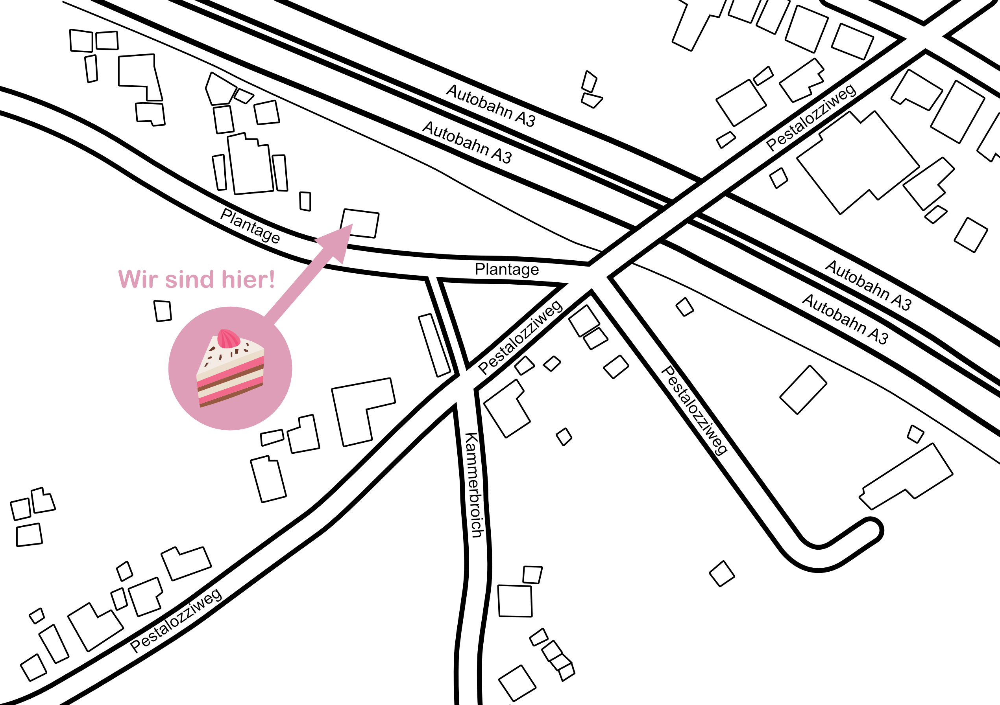

ACHTUNG! DIESES CAFÉ EXISTIERT NICHT!
Diese Website ist ein Kunstprojekt! Fahrt bitte nicht hin!
So findet ihr uns.
Wegbeschreibung vom Autobahnkreuz Köln-Ost (A3, Abfahrt Rösrath)
zum Café "Kunst & Kuchen" (Plantage 12a)
Mit dem Auto:
- Autobahn A3: Nehmen Sie die Abfahrt Rösrath und folgen Sie der B55 in Richtung Rösrath/Bergisch Gladbach.
- B55: Biegen Sie rechts ab auf die B55 in Richtung Bergisch Gladbach. Folgen Sie der B55 für ca. 3 km.
- Rechts abbiegen: Biegen Sie rechts ab in die Straße Am Scheidbach. Folgen Sie der Straße Am Scheidbach für ca. 1 km.
- Links abbiegen: Biegen Sie links ab in die Straße Plantage.
- Ziel erreicht: Das Café "Kunst & Kuchen" befindet sich auf der rechten Seite in der Hausnummer 12a.
Parken:
In der Nähe des Cafés stehen kostenlose Parkplätze zur Verfügung.
Mit öffentlichen Verkehrsmitteln:
Vom Bahnhof Rösrath nehmen Sie die Buslinie 423 in Richtung Bensberg. Steigen Sie an der Haltestelle "Plantage" aus.
Das Café befindet sich ca. 50 Meter entfernt von der Bushaltestelle.
